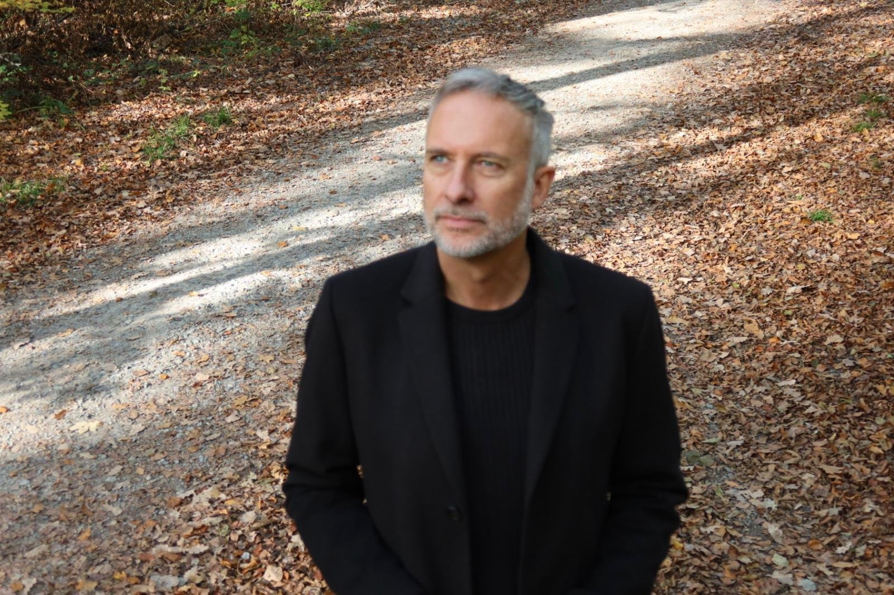
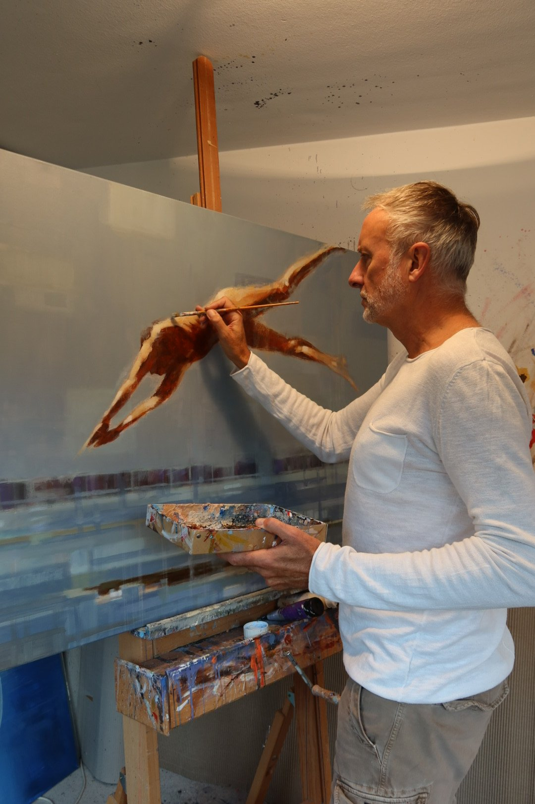

Archiv · 2026
Traces of Motion
Mit Arbeiten von Steffen Köhl
- Ausstellung
- 28.11.2026 – 10.01.2027
- Ort
- Rotebühlstraße 87, Stuttgart
- Vernissage
- 28.11.2026, 15–20 Uhr
Painted Movements – Painted Narratives. Von der Präzision des Automobildesigns zur Freiheit des künstlerischen Ausdrucks.
Steffen Köhl erkundet das emotionale Zusammenspiel von Form, Körper und Material in Bewegung. Seine Werke übersetzen jahrzehntelange kreative Erfahrung in eine unverwechselbare Bildsprache, in der dynamische Kompositionen und malerische Erzählungen lebendig werden.
Seine naturalistischen Darstellungen bringen manch Hintergründiges in den Vordergrund und überraschen mit ihrem eigenen Blick auf Mensch, Maschine und mehr.
Ein Nachmittag im Dialog mit dem Künstler: Steffen Köhl ist bei der Vernissage persönlich anwesend und gibt Einblicke in seine Inspirationen und die Geschichten hinter seinen Werken.
Zur aktuellen AusstellungÜber den Künstler
Steffen Köhl

Steffen Köhl studierte Industrie- und Automobildesign an der Fachhochschule für Gestaltung in Pforzheim, bevor er seine internationale Karriere bei Mercedes-Benz Design begann. Über mehr als drei Jahrzehnte prägte er maßgeblich die Gestaltung zahlreicher Fahrzeuge.
Von 2009 bis 2024 leitete er den Advanced-Design-Bereich von Mercedes-Benz und verantwortete dort auch Kreativprojekte und Kooperationen an der Schnittstelle von Design, Kunst und Kultur, unter anderem mit der Pinakothek der Moderne in München, der Berlin Fashion Week und der Art Basel Miami Beach.
Malerei und Illustration blieben all die Jahre seine eigene Leidenschaft, die er stets weiterentwickelte. Heute spiegeln seine unverwechselbaren Arbeiten diese Begeisterung für Ästhetik, Bewegung und visuelles Erzählen wider.
Seine künstlerischen Wurzeln reichen über Generationen zurück: Steffen Köhl ist der Urenkel des deutschen Malers Otto Ewel und Großneffe der Bildhauerin Maria Ewel.
